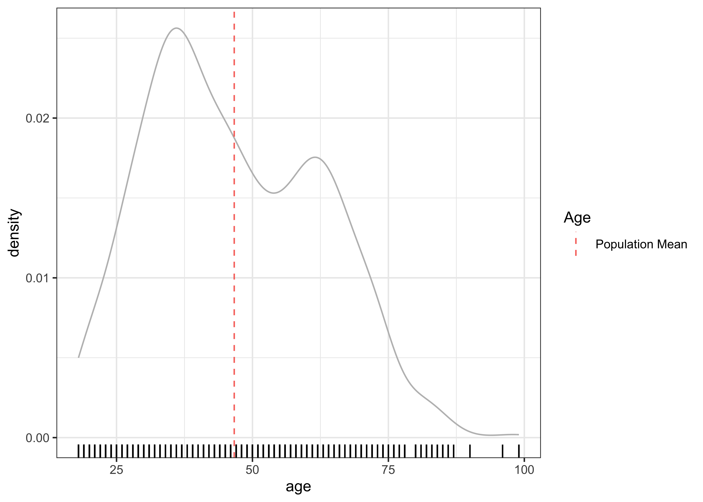

the_packages <- c(
## R Markdown
"kableExtra","DT","texreg",
## Tidyverse
"tidyverse", "lubridate", "forcats", "haven", "labelled",
"modelr",# <<
## Extensions for ggplot
"ggmap","ggrepel", "ggridges", "ggthemes", "ggpubr",
"GGally", "scales", "dagitty", "ggdag", "ggforce",
# Data
"COVID19","maps","mapdata","qss","tidycensus", "dataverse",
# Analysis
"DeclareDesign", "zoo", "boot","purrr"
)Week 10:
Quantifying uncertainty with confidence intervals
class: inverse, center, middle # Overview
General Plan
- Course Plan
- Setup
- Feedback
- Review
- Confidence Intervals
background-image: url(“https://i.kym-cdn.com/entries/icons/original/000/037/873/We’re_All_Trying_To_Find_The_Guy_Who_Did_This_banner_1.jpg”) background-size:contain
Two Options:
- Proceed with group projects with condensed schedule/assignments
–
- Replace group projects with a take home (open book/notes) final exam
- Posted April 30
- Due May 7
- Mix of theory, concepts, and coding.
Course Plan: Option 1
April 13: No Class, Review Feedback to A2
April 18: Lecture – Hypothesis Testing
April 20 Workshop on Paper – Inference About Models: Counts as Assignment 3
April 25: Lecture – Course Review
April 27: Workshop: Paper drafts and Presentations
April 30: Upload Presentations
May 2: Class Presentations Part 1
May 4: Class Presentations Part 2
May ?: Tacos?
Course Plan: Option 2
April 13: No Class,
April 18: Lecture – Hypothesis Testing
April 20 Lab – Hypothesis Testing and Interval Estimation
April 25: Lecture – Course Review
April 27: Workshop:
April 30: Take Home Final Exam
May ?: Tacos or Pizza with POLS 1140?
May 7: Take Home Final Exam due
What do we want to do?
class:inverse, middle, center # üí™ ## Get set up to work
Packages for today
Define a function to load (and if needed install) packages
ipak <- function(pkg){
new.pkg <- pkg[!(pkg %in% installed.packages()[, "Package"])]
if (length(new.pkg))
install.packages(new.pkg, dependencies = TRUE)
sapply(pkg, require, character.only = TRUE)
}Load packages for today
ipak(the_packages) kableExtra DT texreg tidyverse lubridate
TRUE TRUE TRUE TRUE TRUE
forcats haven labelled modelr ggmap
TRUE TRUE TRUE TRUE TRUE
ggrepel ggridges ggthemes ggpubr GGally
TRUE TRUE TRUE TRUE TRUE
scales dagitty ggdag ggforce COVID19
TRUE TRUE TRUE TRUE TRUE
maps mapdata qss tidycensus dataverse
TRUE TRUE TRUE TRUE TRUE
DeclareDesign zoo boot purrr
TRUE TRUE TRUE TRUE class:inverse, center, middle # üí™ ## Load Data for today
We’ll use data from last week’s lab to
load(url("https://pols1600.paultesta.org/files/data/df_drww.rda"))class:inverse, middle, center # üîç ## Review: Generalized Linear Models
Generalized Linear Models
In last week’s lab we fit two models
- OLS
- Logistic regression
# OLS
m1 <- lm(support_war01 ~ age + sex + education_n, df_drww)
# Logisitic
m2 <- glm(support_war01 ~ age + sex + education_n, df_drww,
family = binomial)Generalized Linear Model
Logisitic regression is a type of generalized linear model used to model binary outcomes
We estimate logistic regression using Maximum Likelihood, which allows us to model outcomes using different probability distributions
Other common generalized linear models
- Probit regression (binary outcomes)
- Poisson regression (count data)
- Negative binomial regression (count data)
It’s still “regression”, but interpretation typically requires transforming predictions (inverting the link function)
| Model 1 | Model 2 | |
|---|---|---|
| (Intercept) | 0.28*** | -1.36*** |
| (0.05) | (0.29) | |
| age | 0.01*** | 0.05*** |
| (0.00) | (0.00) | |
| sexMale | 0.09*** | 0.50*** |
| (0.02) | (0.13) | |
| education_n | -0.02 | -0.10 |
| (0.01) | (0.06) | |
| R2 | 0.11 | |
| Adj. R2 | 0.11 | |
| Num. obs. | 1463 | 1463 |
| AIC | 1575.54 | |
| BIC | 1596.69 | |
| Log Likelihood | -783.77 | |
| Deviance | 1567.54 | |
| ***p < 0.001; **p < 0.01; *p < 0.05 | ||
Prediction Data Frame
pred_df <- expand_grid(
age = 18 : 99,
sex = "Female",
education_n = mean(df_drww$education_n, na.rm = T)
)Predicted Values
# #Predicted values for m1
pred_df$pred_ols <- predict(m1,
newdata = pred_df)
# Predicted values for m2
# Remember to add type = "response"
pred_df$pred_logit <- predict(m2,
newdata = pred_df,
type = "response")# data
pred_df%>%
# aesthetics
ggplot(aes(age, pred_ols, col = "OLS"))+
# geometries
geom_line()+
geom_line(aes(y = pred_logit, col = "Logistic"))+
geom_jitter(data=df_drww, aes(age, support_war01),
col = "black",
height = .05,
size = .5,
alpha = .5)+
labs(
col = "Model",
x = "Age",
y = "Predicted Values"
)
class: inverse, center, middle # üí° # Confidence Intervals ## The Basics
Overview:
Confidence intervals provide a way of quantifying uncertainty about estimates
Confidence intervals describe a range of plausible values
That range is a function of the standard error of the estimate, and the a critical value determined \(\alpha\), which describes the degree of confidence we want
- A 95% confidence interval corresponds to an \(\alpha\) of 0.05
A standard error is the standard deviation of the sampling distribution of our estimate
We can obtain the sampling distribution via:
- simulation (bootstrapping)
- asymptotic theory (the CLT)
Our confidence is about the interval, not the estimate.
Defintions: Populations and Samples
Population: All the cases from which you could have sampled
Parameter: A quantity or quantities of interest often generically called \(\theta\) (“theta”). Something we’d like to know about our population
Sample: A (random) draw from that population
Sample Size: The number of observations in your draw (without replacement)
Defintions: Estimators, Estimates, and Statistics
Estimator: A rule for calculating an estimate of our parameter of interest.
Estimate: The value produced by some estimator for some parameter from some data. Often called \(\hat{\theta}\)
Unbiased estimators: \(E(\hat{\theta})=E(\theta)\) On average, the estimates produced by some estimator will be centered around the truth
Consistent estimates: \(\lim_{n\to \infty} \hat{\theta_N} = \theta\) As the sample size increases, the estimates from an estimator converge in probability to the parameter value
Statistic: A summary of the data (mean, regression coefficient, \(R^2\)). An estimator without a specified target of inference
Definitions: Distrubtions and Standard Errors
Sampling Distribution: How some estimate would vary if you took repeated samples from the population
Standard Error: The standard deviation of the sampling distribution
Resampling Distribution: How some estimate would vary if you took repeated samples from your sample WITH REPLACEMENT
- “Sampling from our sample, as the sample was sampled from the population.”
Confidence Intervals: Interpretation
Confidence intervals give a range of values that are likely to include the true value of the parameter \(\theta\) with probability \((1-\alpha) \times 100\%\)
- \(\alpha = 0.05\) corresponds to a “95-percent confidence interval”
Our “confidence” is about the interval
In repeated sampling, we expect that \((1-\alpha) \times 100\%\) of the intervals we construct would contain the truth.
For any one interval, the truth, \(\theta\), either falls within in the lower and upper bounds of the interval or it does not.
Two Approaches to Calculating Confidence Intervals:
In general, there are two ways to calculate confidence intervals:
Simulation: Use our computers to simulate the idea of repeated sampling (e.g. bootstrapping)
- Flexible, but more computationally intensive
Asymptotic Theory: Use math to derive the properties of the distributions that would arise under repeated sampling
- Faster, but requires more assumptions that may not hold
We will consider both.
The theory of CIs is easier to illustrate via simulation
The practice of calculating CIs is (generally) easier using asymptotic theory
Steps to Calculating a Confidence Interval
From QSS (p. 330)
Choose the desired level of confidence \((1-\alpha)\times 100%\) by specifying a value of α between 0 and 1: the most common choice is= \(\alpha = 0.05\), which gives a 95% confidence level.
Derive the sampling distribution of the estimator by computing its mean and variance.
Compute the standard error based on this sampling distribution. (square root of the variance)
Compute the critical value \(z_{\alpha/2}\) as the \((1-\alpha)\times 100\) percentile value of the standard normal distribution
Compute the lower and upper confidence limits as \(\hat{\theta} - z_{\alpha/2}\times SE\) and \(\hat{\theta} + z_{\alpha/2}\times SE\) standard error, respectively.
class: inverse, center, middle # üí° # Confidence Intervals ## Simulating the Sampling Distribution through Bootstrapping
Populations
Let’s load the data from the Do Russians Want War survey
load(url("https://pols1600.paultesta.org/files/data/df_drww.rda"))To understand the logic of confidence intervals, let’s treat this data as our population from which we we could draw repeated samples.
Population Age
In our population, there are parameters, true values of things we want to know.
Suppose we’re interested in the average age of our population.
In our population, the true value of \(\mu_{age} = E[Age]\) is
mu_age <- mean(df_drww$age)
mu_age[1] 46.64693Similarly, the true \(\sigma_{age} = \sqrt{E[Age^2] - E[Age]^2}\)
sd_age <- sqrt(mean((df_drww$age-mean(df_drww$age))^2))
sd_age[1] 15.81829Distribution Population Age
p_pop <- df_drww %>%
ggplot(aes(age))+
geom_density(col="grey")+
geom_rug()+
geom_vline(
aes(xintercept = mu_age,
col = "Population Mean"),
linetype=2)+
theme_bw()+
labs(color = "Age")
p_pop
Sample Estimates of Average Age (N = 25)
Suppose we took three samples, without replacement of size 25, and calculated the average age in each sample:
set.seed(123)
mean_age1 <- mean(sample(df_drww$age, 25, replace = F))
mean_age2 <- mean(sample(df_drww$age, 25, replace = F))
mean_age3 <- mean(sample(df_drww$age, 25, replace = F))
mean_age1[1] 43.36mean_age2[1] 39.36mean_age3[1] 49.72
Repeated Sampling
Imagine we could draw a 1,000 or 10,000 or an infinite number of samples of size N=25 from our population.
How much would our estimate of the average of age of the population vary?
Let’s use our computers to simulate this process and find out!
Simualting Repeated Sampling
n_sims <- 1000
samp_size <- 25
set.seed(123)
mu_age_samp_dist_n25 <- tibble(
sim = 1:n_sims,
distribution = "Sampling",
sample = "Population"
) %>%
mutate(
samp = purrr::map(sim, ~ slice_sample(df_drww, n = samp_size, replace = F)),
estimate = purrr::map_dbl(samp, ~ mean(.$age))
)mu_age_samp_dist_n25# A tibble: 1,000 × 5
sim distribution sample samp estimate
<int> <chr> <chr> <list> <dbl>
1 1 Sampling Population <df [25 × 42]> 43.4
2 2 Sampling Population <df [25 × 42]> 39.4
3 3 Sampling Population <df [25 × 42]> 49.7
4 4 Sampling Population <df [25 × 42]> 46.2
5 5 Sampling Population <df [25 × 42]> 50.6
6 6 Sampling Population <df [25 × 42]> 47.8
7 7 Sampling Population <df [25 × 42]> 46.3
8 8 Sampling Population <df [25 × 42]> 41.4
9 9 Sampling Population <df [25 × 42]> 45.4
10 10 Sampling Population <df [25 × 42]> 48.8
# ℹ 990 more rowsOne Sample
mu_age_samp_dist_n25$samp[[1]]$age [1] 35 31 58 26 56 25 53 26 36 35 83 52 41 61 38 29 30 36 60 70 40 32 28 58 45mean(mu_age_samp_dist_n25$samp[[1]]$age)[1] 43.36mu_age_samp_dist_n25$estimate[[1]][1] 43.36
p_dist <- mu_age_samp_dist_n25 %>%
ggplot(aes(estimate))+
geom_density()+
geom_rug()+
geom_density(
data = df_drww,
aes(x=age),col = "grey"
)+
geom_vline(
aes(xintercept = mu_age,
col = "Population Mean"),
linetype=2)+
theme_bw()+
labs(title = "Distribution of Sample Means (N=25)")
p_dist
Standard Errors
A standard error is simply the standard deviation of the sampling distribution.
The standard error for our simulation above:
se_age_n25 <- sd(mu_age_samp_dist_n25$estimate)
se_age_n25[1] 3.146543Coverage Intervals
From the Central Limit Theorem, we know that the distribution of sample means will converge to a normal distribution.
From probability theory, we know that we that roughly 95 percent of the values in a normal distribution fall between Two Standard Deviations of the mean.
ci_age_ul_n25 <- mu_age + 2*se_age_n25
ci_age_ll_n25 <- mu_age - 2*se_age_n25
mean(mu_age_samp_dist_n25$estimate >ci_age_ll_n25 &
mu_age_samp_dist_n25$estimate <ci_age_ul_n25)[1] 0.954mu_age_samp_dist_n25 %>%
ggplot(aes(estimate))+
geom_density()+
geom_rug(
aes(col = estimate >ci_age_ll_n25 &
estimate <ci_age_ul_n25)
)+
geom_vline(xintercept = mu_age,
col = "red",
linetype=2)+
guides(col="none")+
geom_segment(aes(x=ci_age_ll_n25,
xend = ci_age_ul_n25,
y = .15,yend = .15 ),
col = "#00BFC4")+
theme_bw()Boostrapped Standard Errors
A standard error is the standard deviation of a hypothetical sampling distribution
How do we calculate a standard error from a single sample?
It turns out that a random sample provides unbiased estimates of both the population mean and the standard deviation of the of the sampling distribution (i.e. the standard error).
We can estimate this this standard error, by sampling with replacement from our sample to generate a bootstrapped sampling distribution
Boostrapped Standard Errors
set.seed(123)
bs_resamp_1 <- tibble(
sim = 1:n_sims,
distribution = "Bootstrap",
sample = "Sample 1",
) %>%
mutate(
samp = purrr::map(sim, ~ slice_sample(
mu_age_samp_dist_n25$samp[[1]], n = samp_size, replace = T)),
estimate = purrr::map_dbl(samp, ~ mean(.$age))
)Boostrapped Standard Errors
bs_resamp_2 <- tibble(
sim = 1:n_sims,
distribution = "Bootstrap",
sample = "Sample 2",
) %>%
mutate(
samp = purrr::map(sim, ~ slice_sample(
mu_age_samp_dist_n25$samp[[2]], n = samp_size, replace = T)),
estimate = purrr::map_dbl(samp, ~ mean(.$age))
)Boostrapped Standard Errors
bs_resamp_3 <- tibble(
sim = 1:n_sims,
distribution = "Bootstrap",
sample = "Sample 3",
) %>%
mutate(
samp = purrr::map(sim, ~ slice_sample(
mu_age_samp_dist_n25$samp[[3]], n = samp_size, replace = T)),
estimate = purrr::map_dbl(samp, ~ mean(.$age))
)Boostrapped Standard Errors
bs_example <- rbind(
mu_age_samp_dist_n25,
bs_resamp_1,
bs_resamp_2,
bs_resamp_3
)
df_se <- bs_example %>%
select(sample, estimate)%>%
dplyr::group_by(sample)%>%
dplyr::summarise(
se = sd(estimate)
)
df_ci <- df_mn %>%
left_join(df_se)
df_ci%>%
mutate(
ll = xint - qt(df=25,.975)*se,
ul = xint + qt(df=25,.975)*se,
y = .15,
xint_pop = xint[1]
) -> df_cibs_example %>%
ggplot(aes(estimate,col = sample))+
geom_density(aes(linetype=distribution))+
facet_wrap(~sample, ncol=1)+
geom_vline(
data = df_ci,
aes(xintercept = xint,
col = sample,
linetype=distribution)
)+
geom_vline(
data = df_ci,
aes(xintercept = xint_pop),
col = "black",
linetype=2)+
geom_segment(
data = df_ci,
aes(x =ll, xend =ul, y=y, yend=y)
)sim_ci_fn<-function(x,
samp_size=100,
n_sims=1000,
level=.95,
bs=F){
# Take a sample of size "nsamp"
y<-sample(x=na.omit(x),size=samp_size,replace=F)
# Calculate the mean
mu<-mean(y,na.rm=T)
# If bs=TRUE do bootstrapped SEs
if(bs==T){
mu_dist<-rerun(
n_sims,
mean(sample(y, samp_size, replace = T)))%>%
unlist()
se<-sd(mu_dist)}else{
# Otherwise, just use assymptotic result (Quicker)
se<-sd(y,na.rm=T)/sqrt(samp_size-1)
}
# Significance level
the.p<-1-(1-level)/2
# Calculate lower and upper limits of interval
ll<-mu-qt(p=the.p,df=samp_size-1)*se
ul<-mu+qt(p=the.p,df=samp_size-1)*se
results<-tibble(mu=mu,ll=ll,ul=ul,se=se)
return(results)
}set.seed(12345)
samp25 <- purrr::map_df(1:1000, ~sim_ci_fn(df_drww$age, samp_size = 25)) %>%dplyr::mutate(sample = 1:n() )
samp50 <- purrr::map_df(1:1000, ~sim_ci_fn(df_drww$age, samp_size = 50))%>%dplyr::mutate(sample = 1:n() )
samp100 <- purrr::map_df(1:1000, ~sim_ci_fn(df_drww$age, samp_size = 100))%>%dplyr::mutate(sample = 1:n() )
samp200 <- purrr::map_df(1:1000, ~sim_ci_fn(df_drww$age, samp_size = 200))%>%dplyr::mutate(sample = 1:n() )
Standard Errors and Sample Size
# Standard errors decrease as sample size increases
c(mean(samp25$se),
mean(samp50$se),
mean(samp100$se),
mean(samp200$se))[1] 3.193029 2.247602 1.588096 1.121755# Specifically, by the square root of the sample size
c(sd_age/sqrt(25),
sd_age/sqrt(50),
sd_age/sqrt(100),
sd_age/sqrt(200))[1] 3.163659 2.237045 1.581829 1.118522Next Week: Standard Errors for Linear Models
As you saw in your lab, we can apply the same principles to calculate standard errors for other quantities like the coefficients from a regression
Next week, we’ll compare these quantities to those obtained from asymptotic theory, and then turn to an alternative approach to quantifying uncertainty: Hypothesis testing.